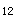

A.病毒性肝炎
B.系统性红斑狼疮
C.风湿性关节炎
D.类风湿性关节炎
E.急性肾小球肾炎
参考答案：B
A.抗双链DNA抗体阳性
B.补体C下降
C.抗核抗体阳性
D.血小板减少
E.γ-球蛋白下降
参考答案：E
A.硫唑嘌呤
B.环磷酰胺
C.吲哚美辛
D.阿司匹林
E.泼尼松
A.安置在没有阳光直射的病室
B.服用避孕药避孕，防止疾病恶化
C.忌食芹菜、香菜
D.卧床休息
E.口腔涂珠黄散、碘甘油等
题目解析：该患者为系统性红斑狼疮。对于处于育龄期女性患者，要避免服用含有雌激素的药物和避孕药，研究表明雌激素对系统性红斑狼疮的发病起着重要的作用。
A.输液点滴情况
B.尿量
C.患者的饮食状况
D.呼吸、血压、脉搏的变化
E.体温
参考答案：D
A.意识状态
B.皮肤、黏膜
C.姿势和步态
D.体温
E.饮食状况
参考答案：A
A.嗜睡
B.头痛
C.烦躁不安
D.言语障碍
E.以上都是
A.禁食6小时、禁水3～4小时
B.禁食14小时、禁水6～8小时
C.禁食12小时、禁水4～6小时
D.禁食10小时、禁水4～6小时
E.禁食8小时、禁水3～4小时
参考答案：C
A.上起乳头连线下至耻骨联合
B.上起锁骨下至耻骨联合
C.上起锁骨下平脐
D.上起剑突下至耻骨联合
E.上起乳头连线下平脐
参考答案：D E
题目解析：上腹部手术的备皮范围：上自乳头平齐，下至耻骨联合，两侧至腋后线。
A.去枕平卧
B.侧卧
C.平卧，不去枕
D.中凹卧
E.半卧
题目解析：硬膜外麻醉术后需平卧6小时，该麻醉术后不会造成头痛、头胀等并发症，故无需去枕，取平卧位即可，C正确。
A.缺乏叶酸
B.缺乏胃酸
C.缺乏维生素B
D.贮存铁缺乏
E.蛋白质太少
A.运铁蛋白
B.骨髓含铁血黄素
C.血红蛋白
D.血清铁
E.总铁结合力
A.食欲好转
B.心跳变慢
C.血压升高
D.面色红润
E.网织红细胞增加
A.肺动脉狭窄
B.法洛四联症
C.房间隔缺损
D.动脉导管未闭
E.室间隔缺损
A.脑栓塞
B.心力衰竭
C.并发脑膜炎
D.肺动脉漏斗部肌肉痉挛
E.脑脓肿
A.内科保守治疗
B.成年后手术治疗
C.近期手术治疗
D.中医中药治疗
E.发病时内科用药
A.淋病
B.滴虫阴道炎
C.泌尿系感染
D.梅毒
E.外阴阴道假丝酵母菌病
A.分泌物加生理盐水镜检
B.衣原体培养
C.宫颈刮片细胞学检查
D.宫颈分泌物涂片革兰染色
E.分泌物悬滴
A.头孢曲松钠
B.青霉素
C.庆大霉素
D.链霉素
E.甲硝唑
A.患者的用物及所接触的物品及器具均应消毒
B.治疗结束后连续2次检查淋菌阴性即为治愈
C.性伴侣检查淋菌，阳性者一并治疗
D.淋病高发区，孕妇需做淋菌筛查
E.妊娠期淋菌感染症状较轻，治疗及时可继续妊娠
A.>50滴／分
B.30～40滴／分
C.10～20滴／分
D.40～50滴／分
E.20～30滴／分
A.头低脚高位
B.平卧位
C.俯卧位
D.半坐位
E.侧卧位
A.给予高热量饮食
B.保持排便通畅
C.给氧吸入
D.注意保暖
E.记录出入水量
A.重度
B.轻度
C.重Ⅰ度
D.重Ⅲ度
E.重Ⅱ度
A.及时更换尿布，保持臀部的清洁干燥
B.用红外线灯照射臀部，灯泡距臀部患处20～25cm
C.用棉签在患处涂油
D.若有大便，可用小毛巾直接擦洗臀部
E.注意保暖
A.鱼肝油软膏
B.甲紫溶液
C.高锰酸钾溶液
D.康复新溶液
E.咪康唑霜
A.周期性麻痹
B.脑出血
C.重症肌无力
D.脑梗塞
E.急性感染性多发性神经根炎
A.发作间歇期可与正常时一样活动和生活
B.只有A和B对
C.肌力恢复期避免过急、过猛活动
D.发作期卧床休息
E.以上都对
A.高钠、低钾、低糖饮食
B.高钠、高钾、高糖饮食
C.低钠、高钾、高糖饮食
D.低钠、高钾、低糖饮食
E.低钠、高钾、高糖饮食
A.甲、乙、丙三人站在床的一边
B.采用三人搬运法
C.甲托患者头、颈部，乙托肩、背、腰部，丙托臀、小腿部
D.平车头端与床尾成锐角
E.三人同时托起，将患者放于平车中间
参考答案：A B E
A.四肢发绀
B.血压下降
C.心音低弱
D.湿冷
E.皮肤苍白
参考答案：A B C D E
题目解析：濒死期循环衰竭的临床表现为皮肤苍白或发绀、湿冷，大量出汗，脉搏快而弱、不规则，血压逐渐下降，少尿等。
A.昏迷
B.气管切开
C.哮喘
D.上肢骨折
E.大小便失禁
参考答案：A C D E
A.幽门梗阻
B.肝硬化伴食管静脉曲张
C.生物碱中毒
D.近期上消化道出血
E.硫酸中毒
参考答案：B D E
A.人生自由权
B.接受教育权
C.获得工资的权利
D.控告权
E.批评和建议的权利
A.病员床号
B.病员姓名
C.申请项目
D.送检日期
E.住院时间
参考答案：A B C D
A.角色之间相互依存
B.角色期待是个体对角色的理解
C.角色相互制约
D.角色是孤立存在的
E.角色行为由个体完成
参考答案：A E
A.环境空气不洁
B.皮肤消毒不严格
C.输液器不洁
D.溶液瓶橡胶塞不洁净
E.生产药液的工艺不完善
A.安排合适的环境
B.帮助患者保持心理平衡
C.协助患者安排好生活
D.做好卫生指导
E.要求患者大胆面对现实
A.婴儿
B.高血压患者
C.昏迷者
D.糖尿病患者
E.神志不清者
参考答案：A C E
A.疾病为中心
B.人的健康为中心
C.护理从属医疗
D.患者为中心
E.医护合作
参考答案：A B D
A.休克
B.糖尿病
C.慢性胆囊炎
D.膀胱炎
E.慢性肾功能衰竭
A.已配制的要素饮食应24h用完
B.长期使用者应补充维生素和矿物质
C.应用期间应定期检查血糖、尿糖、电解质等指标
D.配制好的溶液存放于4℃以下的冰箱内保存
E.无须严格执行无菌操作
A.安静睡眠状态
B.环境温度降低
C.寒战
D.甲状腺素分泌减少
E.进食
A.偏瘫患者测脉，应选择健侧肢体
B.一般选择桡动脉作测量部位
C.一般患者测30秒，将所测脉搏数×2
D.异常脉搏、危重患者应测1分钟
E.不可用拇指诊脉
A.消毒液的浓度
B.消毒的方法
C.消毒液的多少
D.物品的性质
E.消毒液的性质
参考答案：A D E
A.婴幼儿和老年人，对疼痛的敏感性较低
B.人对疼痛的表达与感受与年龄有关
C.注意力高度集中于其他事物，疼痛会减轻或消失
D.患者所处的文化背景，可影响患者对疼痛的评价
E.积极的情绪可减轻疼痛
A.尿量
B.引流液及分泌物量
C.皮肤失水量
D.胃肠减压量
E.呕吐量
参考答案：A B D E
A.大汗丢失的水
B.正常情况下皮肤蒸发的水
C.正常情况下呼出的水
D.正常情况下粪便中的水
E.呼吸过程呼出的水
参考答案：B C
A.网状内皮系统
B.血液缓冲系统
C.肾
D.胃肠道
E.肺
参考答案：B C E
A.减轻疼痛
B.减轻腹胀
C.利于腹腔引流使感染局限化
D.减轻伤口缝合处的张力
E.减少术后出血
参考答案：A C D
A.有利于减轻体重
B.提高胰岛素敏感性
C.改善脂肪代谢紊乱
D.诱发低血糖反应
E.降低血糖
参考答案：A B C E
A.维护重要脏器的功能
B.有效的心搏出量
C.外周血管张力
D.足够的血容量
E.纠正酸碱失调
参考答案：B C D
A.减少回心血量
B.利于静脉回流
C.利于病人体位舒适
D.减轻肺淤血
E.有利于呼吸
参考答案：B E
A.细菌性炎症
B.慢性肾炎
C.严重贫血
D.大手术后
E.肝硬化
A.外阴灼热感
B.外阴湿疹
C.外阴瘙痒
D.白带增多
E.外阴疼痛
A.静脉壁本身薄弱
B.久坐久站
C.门静脉高压
D.长期腹泻
E.长期排尿困难
A.血钙浓度
B.血镁浓度
C.血氯浓度
D.血钠浓度
E.血钾浓度
A.感染
B.红细胞破坏
C.吸收热
D.白细胞破坏
E.血小板过少
题目解析：急性白血病可有低热，主要是由于血细胞分化和增殖的异常，核酸代谢异常旺盛，释放的能量亦较多，患者常会表现发热但较高热往往提示有合并感染。
A.体液以失水为主
B.体液以失氯为主
C.体液以失钾为主
D.体液以失钙为主
E.体液以失钠为主
A.单一用药无效者可联合用药
B.达疗效后继续正规用药
C.大剂量开始
D.连续3年无发作后可缓慢减量
E.以小剂量维持后停药
A.经常反酸
B.并发大出血
C.急性穿孔
D.并发瘢痕性幽门梗阻
E.癌变
A.指甲已超过指端
B.身长25cm，皮下脂肪发育良好
C.四肢活动活泼
D.临床上用普通听诊器可听到胎心
E.吸吮发育良好
A.子宫肌壁
B.胎膜
C.胎盘
D.羊水
E.脐带
A.夜间睡眠应保持半卧位
B.注意保暖
C.夜间继续吸氧
D.睡前给小量镇静药
E.保持安静，减少声、光刺激
A.院长-护理部-护士长
B.科护士长-护士长-护师
C.院长-护理院长-护士长
D.院长-护理部-科护士长
E.护理部-科护士长-护士长
A.11.2%乳酸钠溶液
B.5％碳酸氢钠溶液
C.碳酸氢钠等渗盐水
D.三羟甲基氨基甲烷
E.5%葡萄糖等渗盐水
A.肝功能
B.出血时间
C.白细胞计数
D.凝血时间
E.血小板计数
A.禁食、输液
B.注射镇痛药
C.安置半卧位
D.注射广谱抗生素
E.尽量少搬动病人
A.2000ml
B.1000ml
C.500ml
D.350ml
E.2500ml
A.9周末形成
B.8周末形成
C.11周末形成
D.12周末形成
E.10周末形成
A.4.0mmol/L
B.3.5mmol/L
C.5.0mmol/L
D.3.0mmol/L
E.4.5mmol/L
A.肠胀气
B.胰管梗塞
C.胆囊结石
D.腹水
E.腹膜炎
B.超急排异
C.慢性排异
D.急性排异
E.加速性排异
A.颅内压增高
B.脑膜炎
C.脑疝
D.脑动脉血栓形成
E.脑梗死
A.气胸
B.胸壁软化
C.血胸
D.疼痛
E.肋间神经损伤
A.收缩压偏低，舒张压偏高
B.临界高血压
C.收缩压偏高，舒张压偏低
D.正常血压
E.高血压
A.无力型
B.正力型
C.瘦长型
D.矮胖型
E.匀称型
A.营养性缺铁性贫血
B.生理性贫血
C.感染性贫血
D.营养性巨幼细胞贫血
E.再生障碍性贫血
A.血液中不得随意加入药品
B.同时采集同病房另一患者的血标本
C.输血前再次与他人核对
D.发生严重反应，立即停止输血
E.库血取出后，30分钟内输入
A.妊娠末期孕妇血液处于低凝状态
B.妊娠后卵巢不排卵
C.妊娠晚期易发生外阴及下肢静脉曲张
D.妊娠32～34周血容量达高峰
E.子宫峡部在妊娠后期形成子宫下段
A.镇静止痛
B.鼻塞给氧
C.手术治疗
D.镇咳祛痰
E.排气减压
A.真空紫外线
B.B波
C.D波
D.A波
E.C波
A.直接戴一次性手套
B.用流动水洗净双手
C.用清洁纱布包裹双手
D.用无菌水洗净双手
E.手快速消毒剂进行洗手消毒
A.20cm×20cm
B.10cm×10cm
C.1cm×1cm
D.5cm×5cm
E.3cm×3cm
A.安静状态下发病
B.有严重意识障碍
C.晨起出现半身瘫痪
D.可有发声障碍
E.有动脉粥样硬化病史
A.使用热水袋
B.用乙醇按摩
C.睡于软床上
D.用温水擦浴
E.经常翻身
A.禁用神经兴奋剂
B.适当参加脑力活动
C.开车要有人陪同
D.需长期正规用药
E.游泳有危险
A.喂养
B.热量供给
C.复温
D.抗感染
E.液体补充
A.迅速脱离中毒环境
B.应用呼吸中枢兴奋药
C.应用利尿药
D.使用高压氧舱
E.应用脱水药
A.血压下降
C.恶心，呕吐
D.呼吸抑制
E.意外情况发生
A.住院患者在医院内获得的感染
B.感染和发病同时发生在医院内
C.陪护者是医院感染的主要对象
D.患者住院期间出现的感染症状
E.患者出院后出现的感染症状
A.防止腹壁血栓形成
B.减轻心脏负担
C.预防风湿复发
D.防止下肢静脉血栓形成
E.防止动脉栓塞
A.含碘高的食物
B.含钠高的食物
C.含钾高的食物
D.含锌高的食物
E.含钙高的食物
A.集体讨论法
B.名义集体决策法
C.德尔菲法
D.头脑风暴法
E.电子会议法
A.18三体综合征
B.猫叫综合征
C.脆性X染色体综合征
D.先天性心脏病
E.21三体综合征
A.优化组合原则
B.动态调整原则
C.合理结构原则
D.以人为本原则
E.经济效能原则
A.对医务人员、患者进行健康教育
B.对医务人员及社区人群进行健康教育
C.对患者及家属进行健康教育
D.对患者、家属、陪护人员以及医务人员、社区人群进行健康教育
E.对患者、家属及陪护人员进行健康教育
A.使阴道上皮角化现象消失
B.促进水钠排泄
C.抑制输卵管蠕动
D.使宫颈黏液分泌增多而稀薄
E.对下丘脑和垂体仅产生负反馈作用
A.冠状动脉粥样硬化
B.肥厚型心肌病
C.重度主动脉瓣病变
D.冠状动脉栓塞
E.冠脉痉挛
A.肝肿大
B.下肢浮肿
C.腹水形成
D.中心静脉压增高
E.体重增加
微信关注